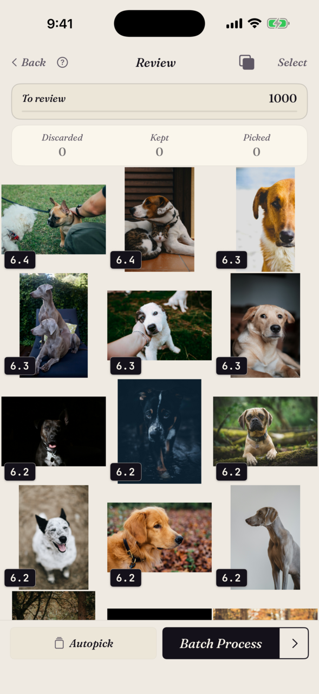
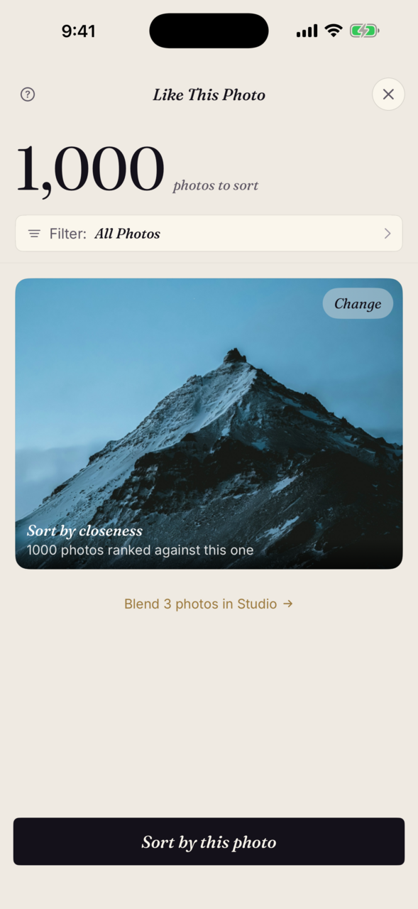
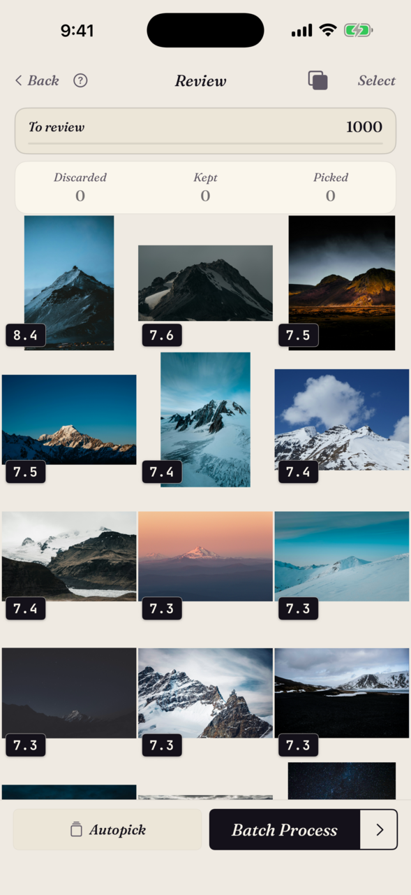
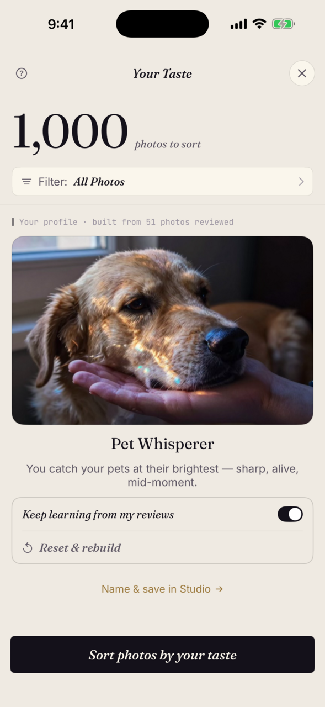
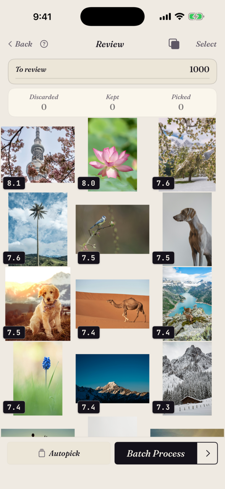
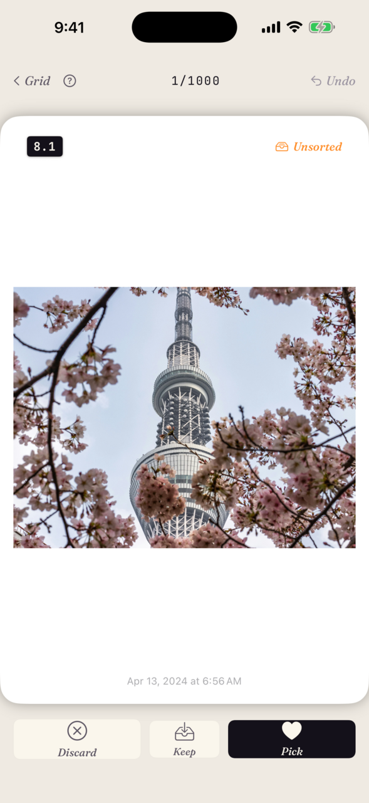
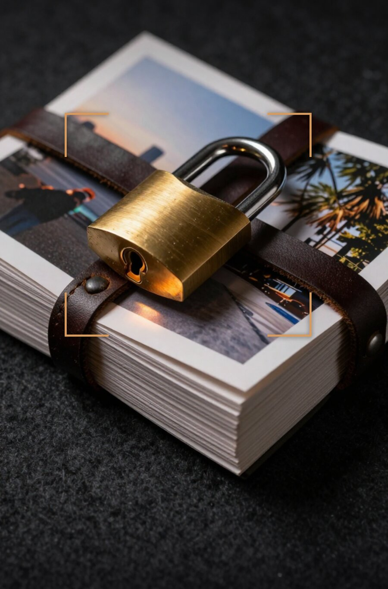

Type it. Found.
SpectraSort finds your best photos — by phrase, by example, by taste. It learns your eye as you go. Entirely on your iPhone; photos never leave it.
Download on the App StoreSix ways in. One tap each.
Search anything you can put into words.
Concrete works — "roses", "swimming seals". Compound works — "dogs at the beach". Even abstract works — "cozy". The phrase is matched against your photos on your phone; neither the search nor the photos go anywhere.
Days of wandering a city collapse into one search: type a theme, every shot of it lands in one grid. No albums, no tagging.

Pick one photo, find the rest.
Photograph one statue on a trip — get your whole accidental statue collection back. Similar-photo search on your phone, not a server.


It learns your eye.
Every review teaches it: the photos you keep and the ones you let go shape a profile of your preferences, built and stored on your phone. Run Your Taste and the top of the pile starts looking like the photos you'd have picked yourself.
Pause its learning, reset it, or let it sharpen — what it rewards is yours.

11 shots of the same sunset → one swipe keeps the sharpest.
Duplicates, shots in a series, and look-alikes are gathered into stacks, so each repeated moment costs one decision — not ten swipes. You choose what gets grouped, or turn stacking off.
Stack cards below are placeholder gradients — swap for a real burst set from the DVC capture batch.
Swipe the winners in. Finish in one screen.
Best rise to the top. Right to pick, down to keep, left to let go — or let Autopick sort and just skim. Batch Process sends picks to an album or the share sheet and clears the rest. Nothing is applied until you tap; deletions always confirm through the system Photos dialog.



Nothing leaves your phone.
Scoring, search, and your taste profile all run on-device, on Apple's Neural Engine. No account, no internet, nothing collected from your photos. Verified by Apple's App Privacy label.
Five free sorts a week, for everyone, forever — not a trial. Premium removes the limit and opens Studio's full controls.
No subscription. No renewals. Saving, sharing, and deleting results is always free.
Start freeCommon questions.
Do my photos ever leave my phone?
Does SpectraSort use my photos to train AI?
How fast is it?
What's free and what does Premium unlock?
I bought Premium in SpectraSort 2.x — do I keep it?
Will SpectraSort delete my photos?
What devices does it run on?
How is this different from Apple Photos or Google Photos?
Find your best photos.
Free for five sorts a week. iPhone, iOS 18.5 or later.
Download on the App Store